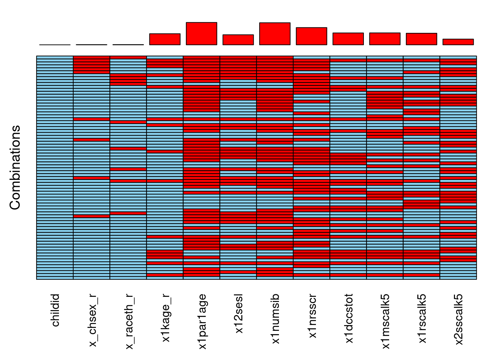
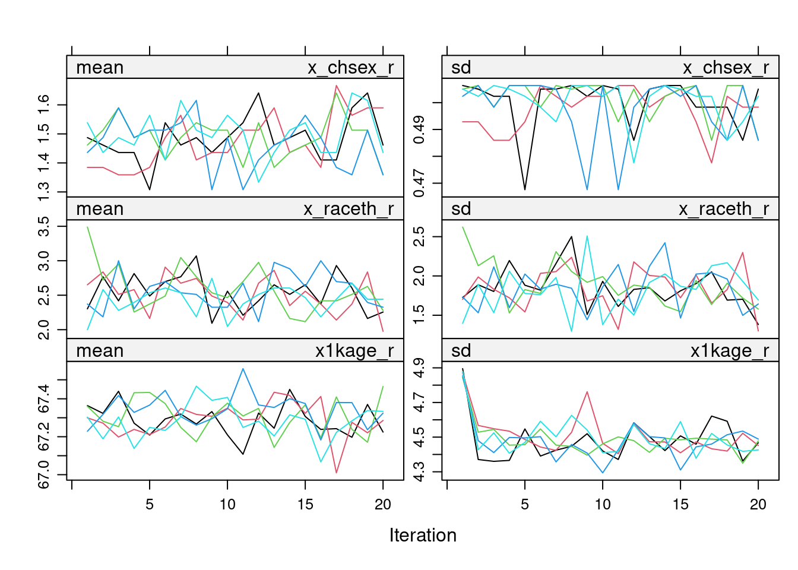
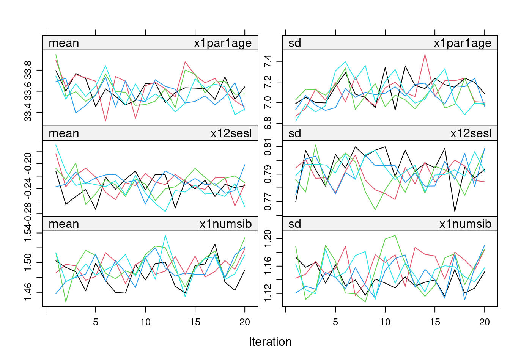
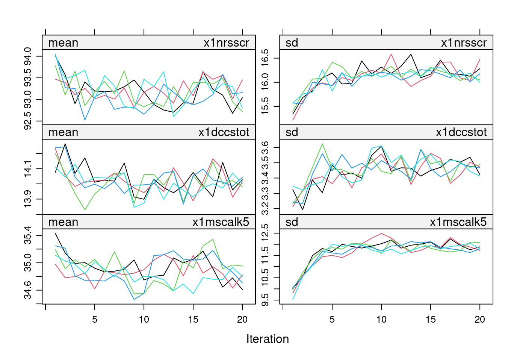
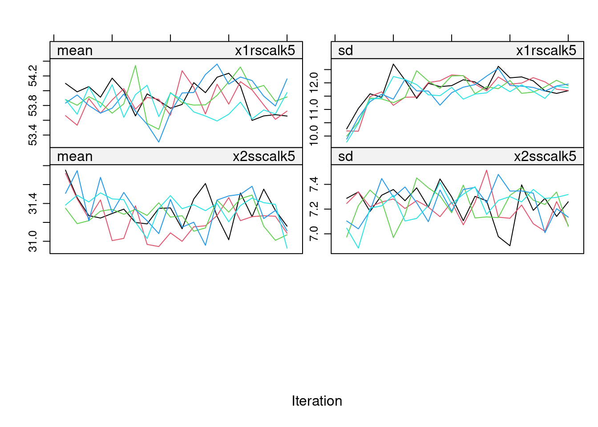
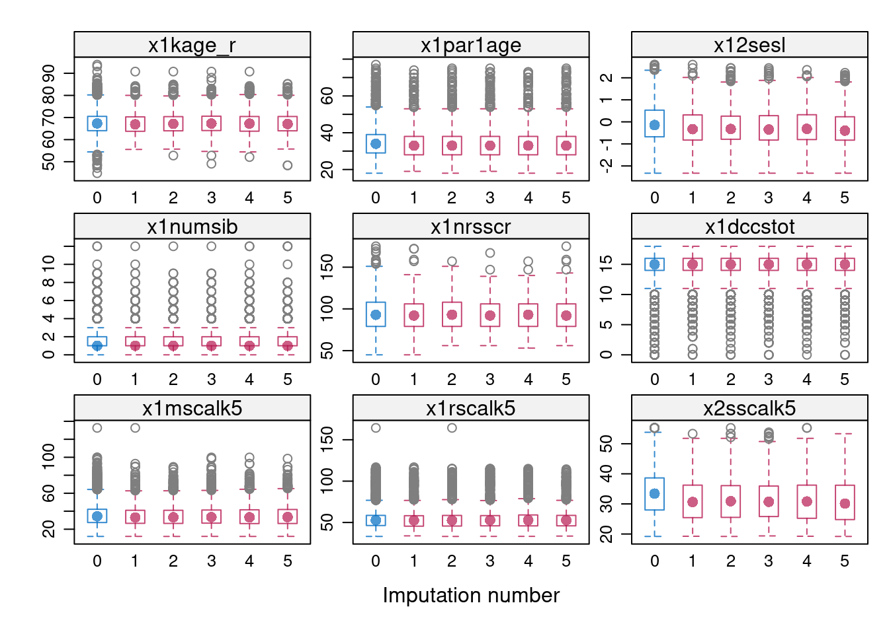
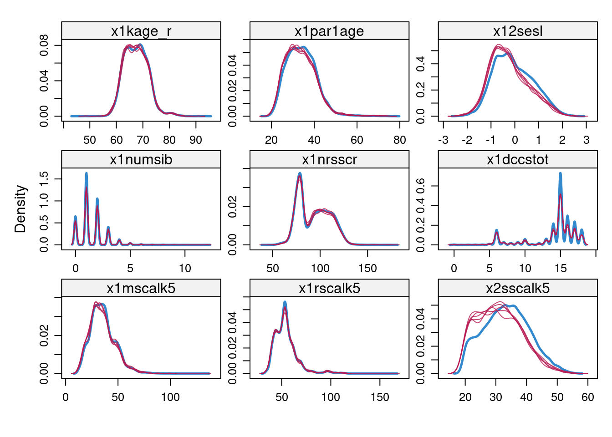

library(VIM)
library(mice)
load("~/qmer/Data/ECLS_K/2011/eclskimp.Rdata")
load("../../data/eclskmi5_removeSEScomp.Rdata")Missing Data Analysis and Multiple Imputation Process
The eclsk_clean.Rdata data file was used as the basis for generating the following subset of data for the missing data analysis and multiple imputation (see the R script code/imputeECLSKclean.R).”a
The following variables were used:
names(eclskimp) [1] "childid" "x_chsex_r" "x_raceth_r" "x1kage_r" "x1par1age"
[6] "x12sesl" "x1numsib" "x1nrsscr" "x1dccstot" "x1mscalk5"
[11] "x1rscalk5" "x2sscalk5" The procedures used to develop the multiple imputation process were based on Van Buuren (2018). First, we decided that the missing at random assumption was plausible, due to the extensive variables available in the ECLSK2011. To support this assumption the following missing data analysis was conducted.
aggr(eclskimp, combined = TRUE, bars=FALSE)
plot(eclskmi5)



bwplot(eclskmi5)
densityplot(eclskmi5)
References
Van Buuren, Stef. 2018. Flexible Imputation of Missing Data. CRC press.